roles.RmdPositional analysis groups nodes together who have similar relational
characteristics, rather than individual characteristics of nodes
themselves. There are many approaches to clustering in social networks
based on modularity maximization (e.g, Louvain, SLM, hierarchical
clustering) or principles of information theory (e.g, Infomap).
ideanet’s role_analysis function currently
offers workflows for two common methods of positional analysis: CONCOR
and hierarchical clustering.
Note: for the sake of simplicity, we will not directly directly
display all visualizations generated by role_analysis in
this vignette. However we provide code for displaying omitted
visualizations encourage you to paste this code in your R console as you
follow this vignette.
To illustrate how to use the role_analysis function,
we’ll use a multirelational network of business and marriage
relationships between families in Renaissance-era Florence. This network
is frequently used to demonstrate role detection methods methods, and is
included natively in ideanet.
library(ideanet)## Loading required package: igraphdata| id | family |
|---|---|
| 0 | ACCIAIUOL |
| 1 | ALBIZZI |
| 2 | BARBADORI |
| 3 | BISCHERI |
| 4 | CASTELLAN |
| 5 | GINORI |
| source | target | weight | type |
|---|---|---|---|
| 0 | 8 | 1 | marriage |
| 1 | 5 | 1 | marriage |
| 1 | 6 | 1 | marriage |
| 1 | 8 | 1 | marriage |
| 2 | 4 | 1 | marriage |
| 2 | 8 | 1 | marriage |
The first step in our positional analysis workflow is to process this
network using the netwrite function, as one generally does
when using ideanet to work with sociocentric data:
nw_flor <- netwrite(nodelist = florentine_nodes,
node_id = "id",
i_elements = florentine_edges$source,
j_elements = florentine_edges$target,
type = florentine_edges$type,
directed = FALSE,
net_name = "florentine",
output = c("graph", "nodelist"))We’ll be passing resulting igraph_list and
node_measures object to the role_analysis
function.
As with all other tools in ideanet, the
role_analysis function asks users to specify several
arguments ahead of execution. Some of these arguments are specific to
the positional analysis method being used and are only required when the
user selects that method:
General Arguments
graph: An igraph object generated by
netwrite. If the network in question is multirelational (as
is the one in this example), the object passed to graph
should be the igraph_list object generated by
netwrite.nodes: A nodelist data frame generated by
netwrite.directed: Specify if the edges should be interpreted as
directed or undirected. Expects TRUE or FALSE
logical.method: Method of role inference. Current valid options
are "cluster" for hierarchical clustering and
concor for CONCOR.min_partitions: A numeric value indicating the number
of minimum number of clusters or partitions to assign to nodes in the
network. When using hierarchical clustering, this value reflects the
minimum number of clusters produced by analysis. When using CONCOR, this
value reflects the minimum number of partitions produced in analysis,
such that a value of 1 results in a partitioning of two
groups, a value of 2 results in four groups, and so
on.max_partitions: A numeric value indicating the number
of maximum number of clusters or partitions to assign to nodes in the
network. The value given here is applied in the same way as
min_partitions.min_partition_size: A numeric value indicating the
minimum number of nodes required for inclusion in a cluster. If an
inferred cluster or partition contains fewer nodes than the number
assigned to min_partition_size, nodes in this
cluster/partition will be labeled as members of a parent
cluster/partition.backbone: A numeric value ranging from 0-1 indicating
which edges in the similarity/correlation matrix should be kept when
calculating modularity of cluster/partition assignments. When
calculating optimal modularity, it helps to backbone the
similarity/correlation matrix according to the nth percentile. Larger
networks benefit from higher backbone values, while lower values
generally benefit smaller networks.viz: Output summary visualizations. Expects
TRUE or FALSE logical.Arguments Specific to Hierarchical Clustering
retain_variables: Output a dataframe of variables used
in clustering. Expects TRUE or FALSE
logical.cluster_summaries: Output a dataframe containing mean
values of clustering variables within each cluster. Expects
TRUE or FALSE logical.dendro_names: If viz is set to
TRUE, a logical value indicating whether the cluster
dendrogram visualization produced should display node labels rather than
numeric ID numbers.fast_triad: A logical value indicating whether to use a
faster method for counting individual nodes’ positions in different
types of triads. Set to TRUE by default. NOTE: This
faster method may lead to memory issues and should be avoided when
working with larger networks.
Arguments Specific to CONCOR
self_ties: A logical value indicting whether to include
self-loops in CONCOR calculation.cutoff: A numeric value ranging from 0 to 1 that
indicates the correlation cutoff for detecting convergence in CONCOR
calculation.max_iter: A numeric value indicating the maximum number
of iterations allowed for CONCOR calculation.For our first example, let’s look at how to identify role positions
using the hierarchical clustering method. Although
role_analysis takes the many arguments listed above, in
practice we only need to specify a fraction of them:
flor_cluster <- role_analysis(method = "cluster",
graph = nw_flor$igraph_list,
nodes = nw_flor$node_measures,
directed = FALSE,
min_partitions = 2,
max_partitions = 7,
viz = TRUE,
cluster_summaries = TRUE,
fast_triad = TRUE)Note that we’ve set fast_triad to be TRUE
here to expedite counting the number of triad positions, or
motifs, that each node occupies in the network. This is
acceptable for the current network given its small size; however, as
stated earlier, setting fast_triad to TRUE may
lead to memory issues with your computer given too large a network.
Should this occur, we recommend setting fast_triad to
FALSE and trying again.
role_analysis is similar to netwrite in
that it simultaneously creates several outputs stored in a single list
object. In the following section, we’ll examine each of the outputs
within this list and what they contain.
Depending on the amount of partitioning applied during clustering,
individual nodes may vary in terms of cluster membership. Users can
inspect cluster membership of individual nodes at each level of
partitioning using the cluster_assignments object:
head(flor_cluster$cluster_assignments) | id | cut_1 | cut_2 | cut_3 | cut_4 | cut_5 | cut_6 | cut_7 | max_mod | best_fit |
|---|---|---|---|---|---|---|---|---|---|
| 0 | 1 | 1 | 1 | 1 | 1 | 1 | 1 | 1 | 1 |
| 1 | 1 | 1 | 1 | 2 | 2 | 2 | 2 | 2 | 2 |
| 2 | 1 | 2 | 2 | 3 | 3 | 3 | 3 | 3 | 3 |
| 3 | 1 | 2 | 2 | 3 | 3 | 3 | 3 | 3 | 3 |
| 4 | 1 | 2 | 2 | 3 | 3 | 3 | 3 | 3 | 3 |
| 5 | 1 | 1 | 1 | 1 | 1 | 1 | 4 | 1 | 1 |
Here id contains each node’s simplified identifier as it
appears in the node_measures dataframe produced by
netwrite. Columns beginning with the cut_
prefix indicate a specific level of partitioning. In most cases, we are
interested in finding a single solution that best categorizes nodes into
different types (“roles”) according to their relational characteristics.
role_analysis determines the optimal level of partitioning
by taking the distance matrix used in the clustering process and
converting it into a similarity matrix. This similarity matrix is then
treated as a dense network whose modularity varies according to the
membership of nodes within derived clusters. Finally,
role_analysis designates the level of partitioning whose
cluster assignments produce the highest modularity score as the best
fit. In effect, this converts a multirelational role problem into a
single-relation community detection problem in a dense network.
Cluster assignments at this identified optimal level are stored in
the max_mod column, and values in this column are generally
those that users will want to use. However, if users require clusters to
have a minimum size as specified by the min_partition_size
argument, they will want smaller clusters identified in
max_mod to be subsumed into a parent cluster. When this is
the case, the best_fit column will contain the closest
compromise between max_mod and the user’s
specifications.
To determine the number of clusters produced at the optimal level of
partitioning, you can simply identify the maximum value contained in
max_mod. However, role_analysis generates two
diagnostic visualizations that provide a faster way of interpreting
clustering output. The cluster_dendrogram visualization
illustrates the cluster membership of nodes at each level of
partitioning while also indicating membership of nodes at the optimal
partitioning level:
flor_cluster$cluster_dendrogram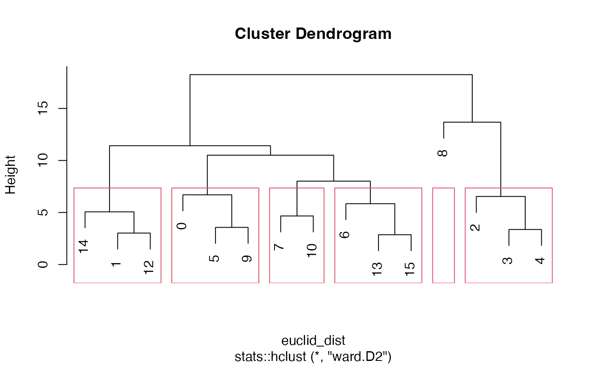
While cluster_dendrogram shows where nodes fall at each
level of partitioning, cluster_modularity shows how the
modularity score of the similarity matrix changes at each level of
partitioning:
flor_cluster$cluster_modularityNote: this plot may not appear in R Markdown documents, but will appear in a plot window if called in the R console.
Looking at this plot and the dendrogram together, we see that nodes in the network have been assigned to one of seven different clusters (including one isolate node; isolates are assigned their own cluster in our approach), and that this partitioning produces the best fit as determined by modularity score. We also see that while most clusters contain about 2-4 nodes, node 8 appears to be unique enough in its relational position to constitute its own cluster.
We now know that nodes in this network fall into one of seven
positions or “roles.” A proper understanding of these results requires
more, however. If clusters are supposed to represent different kinds of
roles that nodes occupy in the network, we’ll want to know why
certain nodes are placed in one cluster over another and how these
clusters differ from one another. The cluster_summaries
dataframe provides a numerical overview of differences between inferred
clusters, allowing us to make progress to this end.
flor_cluster$cluster_summaries| cluster | size | mean_total_degree | mean_weighted_degree | mean_norm_weighted_degree | mean_marriage_total_degree | mean_marriage_weighted_degree | mean_marriage_norm_weighted_degree | mean_business_total_degree | mean_business_weighted_degree | mean_business_norm_weighted_degree | mean_betweenness | mean_marriage_betweenness | mean_business_betweenness | mean_bonpow | mean_bonpow_negative | mean_marriage_bonpow | mean_marriage_bonpow_negative | mean_business_bonpow | mean_business_bonpow_negative | mean_pagerank | mean_marriage_pagerank | mean_business_pagerank | mean_closeness | mean_marriage_closeness | mean_business_closeness | mean_isolate | mean_marriage_isolate | mean_business_isolate | mean_cor_marriage_summary_graph | mean_cor_business_summary_graph | mean_cor_business_marriage | mean_summary_graph_201_s | mean_summary_graph_201_b | mean_summary_graph_300 | mean_marriage_201_s | mean_marriage_201_b | mean_marriage_300 | mean_business_201_b | mean_business_201_s | mean_business_300 | mean_total_degree_std | mean_weighted_degree_std | mean_norm_weighted_degree_std | mean_marriage_total_degree_std | mean_marriage_weighted_degree_std | mean_marriage_norm_weighted_degree_std | mean_business_total_degree_std | mean_business_weighted_degree_std | mean_business_norm_weighted_degree_std | mean_betweenness_std | mean_marriage_betweenness_std | mean_business_betweenness_std | mean_bonpow_std | mean_bonpow_negative_std | mean_marriage_bonpow_std | mean_marriage_bonpow_negative_std | mean_business_bonpow_std | mean_business_bonpow_negative_std | mean_pagerank_std | mean_marriage_pagerank_std | mean_business_pagerank_std | mean_closeness_std | mean_marriage_closeness_std | mean_business_closeness_std | mean_isolate_std | mean_marriage_isolate_std | mean_business_isolate_std | mean_cor_marriage_summary_graph_std | mean_cor_business_summary_graph_std | mean_cor_business_marriage_std | mean_summary_graph_201_s_std | mean_summary_graph_201_b_std | mean_summary_graph_300_std | mean_marriage_201_s_std | mean_marriage_201_b_std | mean_marriage_300_std | mean_business_201_b_std | mean_business_201_s_std | mean_business_300_std |
|---|---|---|---|---|---|---|---|---|---|---|---|---|---|---|---|---|---|---|---|---|---|---|---|---|---|---|---|---|---|---|---|---|---|---|---|---|---|---|---|---|---|---|---|---|---|---|---|---|---|---|---|---|---|---|---|---|---|---|---|---|---|---|---|---|---|---|---|---|---|---|---|---|---|---|---|---|---|---|---|
| 1 | 3 | 2.000000 | 2.000000 | 0.0285714 | 1.000000 | 1.000000 | 0.0250000 | 1.000000 | 1.000000 | 0.0333333 | 0.0023913 | 0.0000000 | 0.0000000 | 0.4279204 | 0.1649395 | 0.3436182 | 0.2496124 | 0.3586379 | 0.0925887 | 0.0352860 | 0.0327159 | 0.0410068 | 0.4703704 | 0.3559259 | 0.2174074 | 0 | 0 | 0.3333333 | 0.7402046 | 0.4899753 | -0.0547522 | 5.000000 | 0.0000000 | 0.0000000 | 2.0000000 | 0.0000000 | 0.0000000 | 0 | 1.333333 | 0.000000 | -1.0033651 | -1.0801234 | -1.0801234 | -1.1927968 | -1.1927968 | -1.1927968 | -0.5773503 | -0.5773503 | -0.5773503 | -0.6591202 | -0.8357033 | -0.5807955 | -1.2077500 | -0.7456867 | -1.3077063 | -0.6726904 | -0.5561957 | -0.6685451 | -0.9608073 | -1.1071962 | -0.5181104 | -1.0090112 | -1.3153252 | -0.2911651 | 0 | 0 | 0.1456438 | -1.0041260 | -0.3405152 | -1.2141592 | 0.1086938 | -0.7188608 | -0.6370221 | -0.3124216 | -0.7186497 | -0.4830459 | -0.4711756 | -0.0968246 | -0.4605662 |
| 2 | 3 | 3.333333 | 3.333333 | 0.0476190 | 3.333333 | 3.333333 | 0.0833333 | 0.000000 | 0.000000 | 0.0000000 | 0.0483957 | 0.1238095 | 0.0000000 | 0.6575333 | 0.4435213 | 1.1948522 | 0.7712099 | 0.0000000 | 0.0000000 | 0.0496653 | 0.0781502 | 0.0127660 | 0.5444444 | 0.5259259 | 0.0000000 | 0 | 0 | 1.0000000 | 1.0000000 | 0.0000000 | 0.0000000 | 5.000000 | 2.3333333 | 0.3333333 | 4.3333333 | 2.6666667 | 0.0000000 | 0 | 0.000000 | 0.000000 | -0.1672275 | -0.5400617 | -0.5400617 | 0.4771187 | 0.4771187 | 0.4771187 | -1.1547005 | -1.1547005 | -1.1547005 | -0.2258785 | 0.2089258 | -0.5807955 | -0.6435723 | -0.3639669 | 0.6622280 | 0.0616603 | -1.2020508 | -0.8044721 | -0.5110856 | 0.4038757 | -1.1078965 | 0.0997923 | 0.7011553 | -1.5172336 | 0 | 0 | 1.6020820 | 0.9577265 | -1.5815831 | -1.0357505 | 0.1086938 | -0.1198101 | -0.3185110 | 0.5287135 | 0.5311759 | -0.4830459 | -0.4711756 | -0.7423218 | -0.4605662 |
| 3 | 3 | 4.000000 | 6.000000 | 0.0857143 | 2.666667 | 2.666667 | 0.0666667 | 3.333333 | 3.333333 | 0.1111111 | 0.0816639 | 0.0730159 | 0.1031746 | 1.2805915 | 0.8223691 | 0.9525905 | 0.6033423 | 1.2037240 | 0.8869239 | 0.0778413 | 0.0622089 | 0.0957788 | 0.5537037 | 0.4711111 | 0.4055556 | 0 | 0 | 0.0000000 | 0.8885364 | 0.9054561 | 0.6113803 | 8.333333 | 7.6666667 | 2.3333333 | 5.3333333 | 2.6666667 | 0.6666667 | 5 | 4.333333 | 1.666667 | 0.2508413 | 0.5400617 | 0.5400617 | 0.0000000 | 0.0000000 | 0.0000000 | 0.7698004 | 0.7698004 | 0.7698004 | 0.0874211 | -0.2196400 | 0.6610369 | 0.8873329 | 0.1551398 | 0.1015834 | -0.1746784 | 0.9656823 | 0.4975971 | 0.3701382 | -0.1263058 | 0.6257562 | 0.2383928 | 0.0509612 | 0.7698958 | 0 | 0 | -0.5825753 | 0.1160057 | 0.7118641 | 0.9564162 | 1.0144756 | 1.2494485 | 1.5925551 | 0.8892000 | 0.5311759 | 1.1271071 | 1.2115945 | 1.3555442 | 1.8422647 |
| 4 | 3 | 3.000000 | 4.333333 | 0.0619048 | 3.000000 | 3.000000 | 0.0750000 | 1.333333 | 1.333333 | 0.0444444 | 0.0610019 | 0.1412698 | 0.0000000 | 0.8589091 | 0.5129390 | 1.0059946 | 0.7996485 | 0.4643523 | 0.1793993 | 0.0629646 | 0.0762313 | 0.0483575 | 0.5185185 | 0.5000000 | 0.2925926 | 0 | 0 | 0.0000000 | 0.9353949 | 0.8598075 | 0.6250892 | 1.666667 | 0.6666667 | 0.0000000 | 0.6666667 | 0.6666667 | 0.0000000 | 0 | 1.000000 | 0.000000 | -0.3762619 | -0.1350154 | -0.1350154 | 0.2385594 | 0.2385594 | 0.2385594 | -0.3849002 | -0.3849002 | -0.3849002 | -0.1071611 | 0.3562453 | -0.5807955 | -0.1487753 | -0.2688490 | 0.2251719 | 0.1016986 | -0.3658194 | -0.5411008 | -0.0951409 | 0.3400567 | -0.3645981 | -0.2882889 | 0.3936311 | 0.1328415 | 0 | 0 | -0.5825753 | 0.4698589 | 0.5962399 | 1.0010863 | -0.7970880 | -0.5477035 | -0.6370221 | -0.7930702 | -0.4061933 | -0.4830459 | -0.4711756 | -0.2581989 | -0.4605662 |
| 5 | 2 | 4.500000 | 6.000000 | 0.0857143 | 2.000000 | 2.000000 | 0.0500000 | 4.000000 | 4.000000 | 0.1333333 | 0.0427601 | 0.0095238 | 0.0928571 | 1.2488985 | 0.9740216 | 0.6967201 | 0.4871883 | 1.4002756 | 1.2350687 | 0.0760888 | 0.0489034 | 0.1091548 | 0.5472222 | 0.4050000 | 0.4138889 | 0 | 0 | 0.0000000 | 0.7928724 | 0.8997065 | 0.4547319 | 3.500000 | 0.0000000 | 0.0000000 | 1.5000000 | 0.0000000 | 0.0000000 | 0 | 1.500000 | 0.000000 | 0.5643929 | 0.5400617 | 0.5400617 | -0.4771187 | -0.4771187 | -0.4771187 | 1.1547005 | 1.1547005 | 1.1547005 | -0.2789514 | -0.7553473 | 0.5368537 | 0.8094606 | 0.3629378 | -0.4905545 | -0.3382102 | 1.3196435 | 1.0086992 | 0.3153274 | -0.5688264 | 0.9051020 | 0.1413724 | -0.7332257 | 0.8168916 | 0 | 0 | -0.5825753 | -0.6064038 | 0.6973010 | 0.4459814 | -0.2989080 | -0.7188608 | -0.6370221 | -0.4926648 | -0.7186497 | -0.4830459 | -0.4711756 | -0.0161374 | -0.4605662 |
| 6 | 1 | 8.000000 | 11.000000 | 0.1571429 | 6.000000 | 6.000000 | 0.1500000 | 5.000000 | 5.000000 | 0.1666667 | 0.4198356 | 0.4523810 | 0.2285714 | 1.6192207 | 2.8578544 | 1.7458177 | 2.6653876 | 1.1316370 | 2.2727995 | 0.1606499 | 0.1443735 | 0.1751973 | 0.7111111 | 0.6333333 | 0.4611111 | 0 | 0 | 0.0000000 | 0.8194652 | 0.8010379 | 0.3133398 | 2.000000 | 10.0000000 | 2.0000000 | 3.0000000 | 5.0000000 | 1.0000000 | 6 | 0.000000 | 0.000000 | 2.7592541 | 2.5652932 | 2.5652932 | 2.3855936 | 2.3855936 | 2.3855936 | 1.7320508 | 1.7320508 | 1.7320508 | 3.2721188 | 2.9812110 | 2.1703409 | 1.7193727 | 2.9442127 | 1.9372779 | 2.7284504 | 0.8358641 | 2.5321641 | 2.9600321 | 2.6063611 | 2.2843428 | 2.5946002 | 1.9751844 | 1.0832012 | 0 | 0 | -0.5825753 | -0.4055876 | 0.4473812 | -0.0147410 | -0.7065098 | 1.8484992 | 1.2740441 | 0.0480649 | 1.6247733 | 1.9321836 | 1.5481485 | -0.7423218 | -0.4605662 |
| 7 | 1 | NA | NA | NA | NA | NA | NA | NA | NA | NA | NA | NA | NA | NA | NA | NA | NA | NA | NA | NA | NA | NA | NA | NA | NA | NA | NA | NA | NA | NA | NA | NA | NA | NA | NA | NA | NA | NA | NA | NA | NA | NA | NA | NA | NA | NA | NA | NA | NA | NA | NA | NA | NA | NA | NA | NA | NA | NA | NA | NA | NA | NA | NA | NA | NA | NA | NA | NA | NA | NA | NA | NA | NA | NA | NA | NA | NA | NA | NA |
cluster_summaries provides both crude and standardized
averages of the relational measures used to determine cluster
membership. These include various measures of network centrality, as
well as the frequency with which nodes occupy specific positions in
different kinds of triads that appear in the network (motifs). Right
away, we see that the single node in cluster 6 differs from its
counterparts in other clusters. This node has a considerably higher
degree, betweenness, and closeness centrality measures, among others. We
also see that our cluster of isolates (cluster 7) appears at the end of
this data frame, with all of its values set to NA given
isolates’ lack of connection to other nodes in the network.
While recognized here, these differences are also visualized in the
cluster_summaries_cent object. Because the network examined
here is multirelational, cluster_summaries_cent plots these
differences for each unique relationship type in the network, as well as
for the overall network:
flor_cluster$cluster_summaries_cent$marriage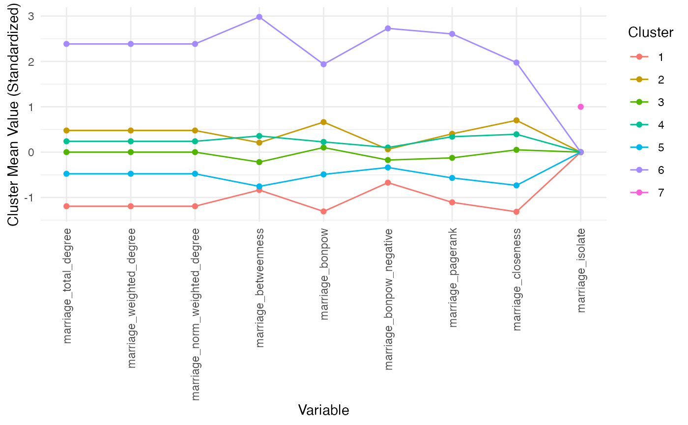
flor_cluster$cluster_summaries_cent$business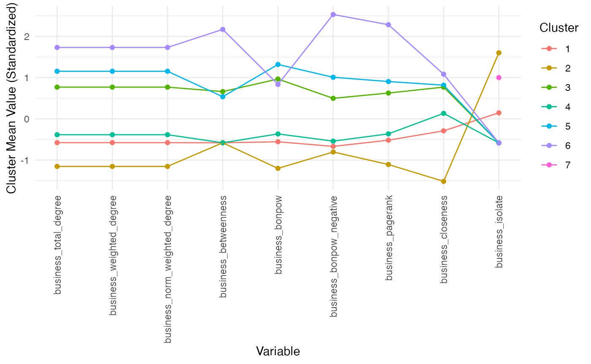
flor_cluster$cluster_summaries_cent$summary_graph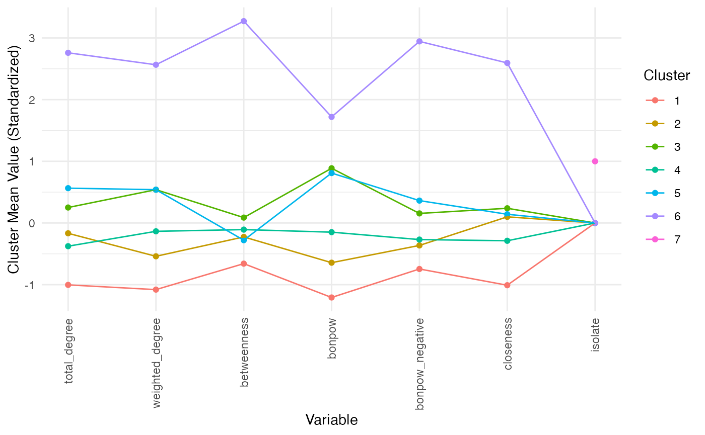
Those familiar with positions and motifs in networks know that as
many as 36 types of positions can exist in a network, which can be
unwieldy to inspect alongside other measures. Consequently, differences
in triad positions are visualized separately in
cluster_summaries_triad:
flor_cluster$cluster_summaries_triad$marriage
flor_cluster$cluster_summaries_triad$business
flor_cluster$cluster_summaries_triad$summary_graph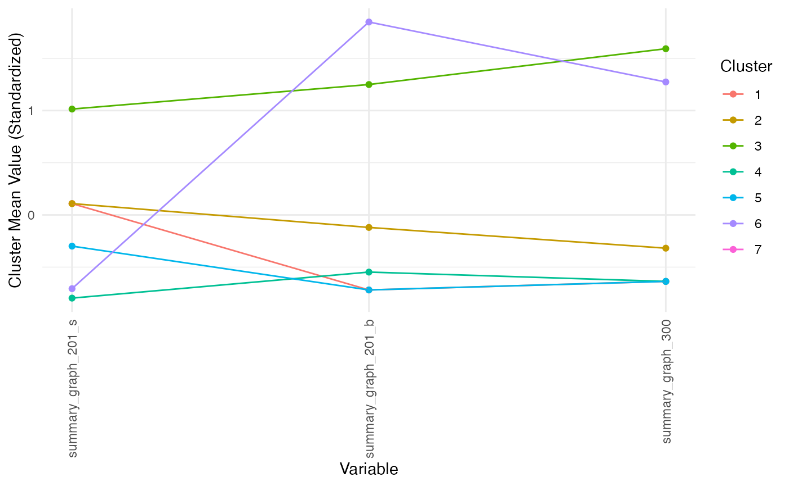
Overall, the node in cluster 6 tends to have the highest values on
most measures used to identify roles in the network. Those familiar with
the substantive setting of this network will not be surprised to learn
that this node represents the Medici family, which was known for its
power and influence in Renaissance Florence. Additionally, nodes in
cluster 2 tend to appear in more clustered parts of this network due to
their business ties. If one is curious to see where the Medici and
families in other role positions appear relative to one another in the
network, one can quickly take the information contained in
cluster_assignments and assign it as a node-level attribute
in an igraph object for visualization:
igraph::V(nw_flor$florentine)$role <- flor_cluster$cluster_assignments$best_fit
plot(nw_flor$florentine,
vertex.color = as.factor(igraph::V(nw_flor$florentine)$role),
vertex.label = NA)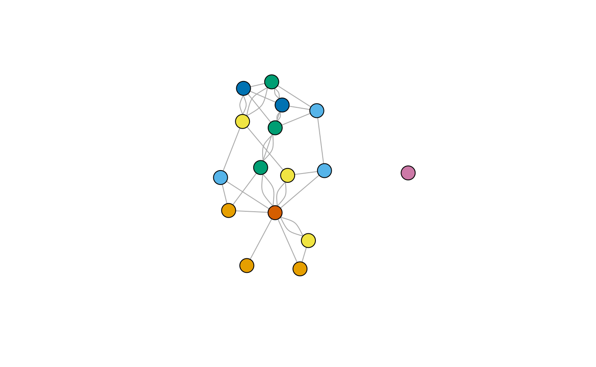
A final point of consideration in positional analysis involves
knowing whether nodes in a particular role tend to form ties among
themselves or with nodes in other roles. When using hierarchical
clustering, role_analysis generates a series of heatmaps,
contained in a list, to visualize the frequency of tie formation within
and between clusters. Each heatmap measures connections across clusters
using different measures, and the names of these measures are used to
extract their corresponding plot from the list:
flor_cluster$cluster_relations_heatmaps$chisq # Chi-squared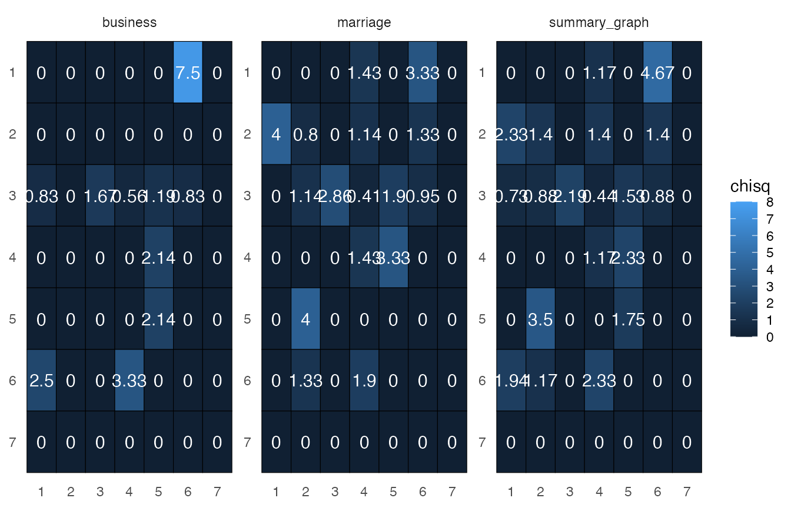
flor_cluster$cluster_relations_heatmaps$density # Density
flor_cluster$cluster_relations_heatmaps$density_std # Density (Standardized)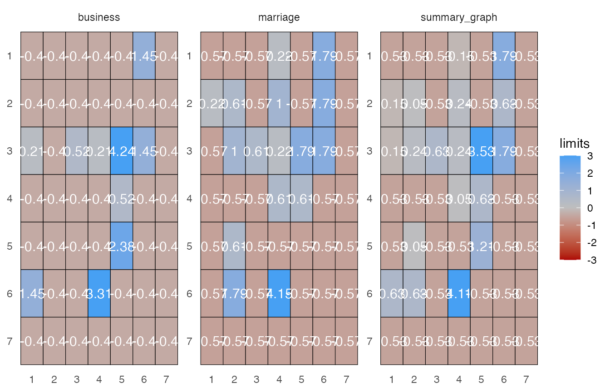
flor_cluster$cluster_relations_heatmaps$density_centered # Density (Zero-floored)Looking at the density-based heatmaps here, one finds a high level of connection between the Medici family and families belonging to cluster 4. One can also see that families in cluster 2 have a high propensity to be tied to families in cluster 5.
Alongside hierarchical clustering, the CONvergence of iterated
CORrelations (CONCOR) algorithm is a popular method for conducting
positional analysis in networks. Those wishing to use this algorithm
instead of hierarchical clustering can easily do so using the
role_analysis function. As stated before, setup for using
CONCOR is similar to that for using hierarchical clustering, with users
only having to specify a few different arguments:
flor_concor <- role_analysis(method = "concor",
graph = nw_flor$igraph_list,
nodes = nw_flor$node_measures,
directed = FALSE,
min_partitions = 1,
max_partitions = 4,
viz = TRUE)Using CONCOR in role_analysis produces fewer outputs,
but those that are produced resemble select items produced using
hierarchical clustering. concor_assignments, for example,
appends “block” assignments to the end of the node_measures
data frame that the user feeds into the role_analysis
function:
flor_concor$concor_assignments %>%
dplyr::select(id, family, dplyr::starts_with("block"), best_fit)| id | family | block_1 | block_2 | block_3 | block_4 | best_fit |
|---|---|---|---|---|---|---|
| 0 | ACCIAIUOL | 2 | 4 | 8 | 13 | 2 |
| 1 | ALBIZZI | 2 | 4 | 7 | 11 | 2 |
| 2 | BARBADORI | 2 | 4 | 8 | 12 | 2 |
| 3 | BISCHERI | 1 | 2 | 4 | 6 | 1 |
| 4 | CASTELLAN | 1 | 1 | 2 | 3 | 1 |
| 5 | GINORI | 2 | 3 | 6 | 9 | 2 |
| 6 | GUADAGNI | 1 | 2 | 3 | 4 | 1 |
| 7 | LAMBERTES | 1 | 2 | 4 | 5 | 1 |
| 8 | MEDICI | 2 | 3 | 6 | 8 | 2 |
| 9 | PAZZI | 2 | 3 | 5 | 7 | 2 |
| 10 | PERUZZI | 1 | 1 | 2 | 2 | 1 |
| 11 | PUCCI | NA | NA | NA | NA | 3 |
| 12 | RIDOLFI | 2 | 4 | 7 | 10 | 2 |
| 13 | SALVIATI | 2 | 4 | 8 | 13 | 2 |
| 14 | STROZZI | 1 | 1 | 1 | 1 | 1 |
| 15 | TORNABUON | 2 | 4 | 7 | 11 | 2 |
As with the hierarchical clustering method, the optimal level of
partitioning for CONCOR is determined according to the maximization of
modularity in a similarity matrix. One can inspect how modularity
changes at different levels of partitioning using the
concor_modularity visualization:
flor_concor$concor_modularityVisualizing CONCOR assignments in a conventional network visualization entails a similar process to that used for hierarchical clustering.
In lieu of a dendrogram, users can see how smaller partitions branch
off of larger parents with the concor_block_tree
visualization. Like cluster_dendrogram, this visualization
allows users to quickly gauge the relative size of blocks inferred by
CONCOR:
flor_concor$concor_block_treeFinally, users can also assess the level of connection across CONCOR
blocks using the concor_relations_heatmaps object:
flor_concor$concor_relations_heatmaps$chisq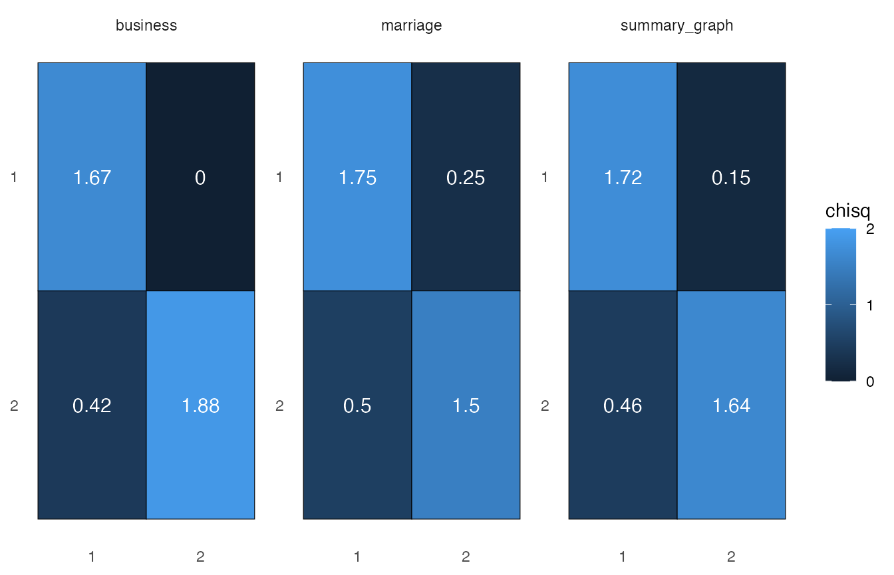
flor_concor$concor_relations_heatmaps$density
flor_concor$concor_relations_heatmaps$density_std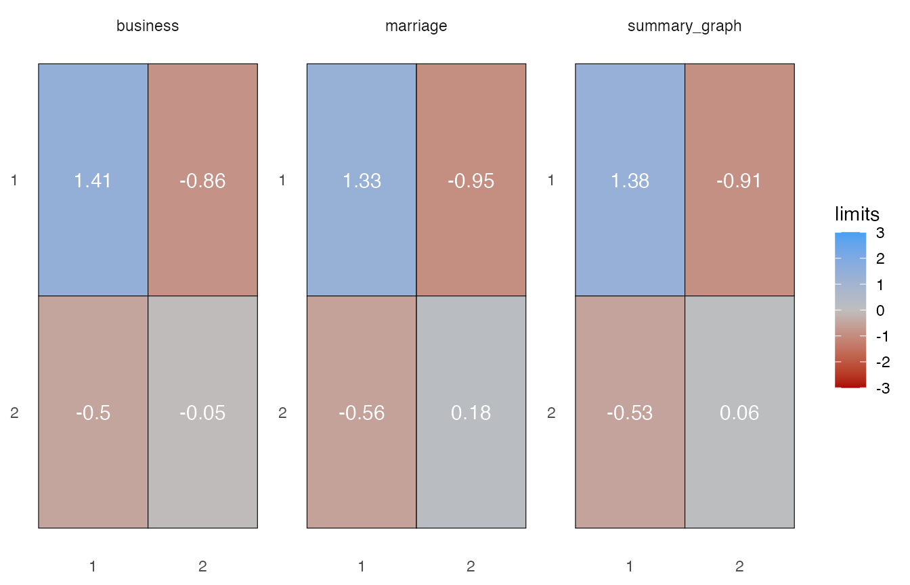
flor_concor$concor_relations_heatmaps$density_centeredOn the whole, using CONCOR tells us that nodes in the Florentine network fall into one of only two blocks (plus a third block for our isolate), and that nodes within these roles tend to interact among themselves rather than with nodes in the other block. These simpler results are less informative than those produced by the hierarchical clustering method. But this is not to say that CONCOR is an inferior approach to positional analysis. Interpreting results from positional analysis often entails more subjectivity than other network analysis methods. Although two partitions may maximize modularity, users may find that a higher level of partitioning produces blocks with important substantive differences. Were we to accept four blocks as a more appropriate fit than two, we see our inferred blocks start to resemble the groups we inferred using hierarchical clustering. Moreover, this resemblance also comes with only a small drop in modularity:
igraph::V(nw_flor$florentine)$concor2 <- flor_concor$concor_assignments$block_2
plot(nw_flor$florentine,
vertex.color = as.factor(igraph::V(nw_flor$florentine)$concor2),
vertex.label = NA)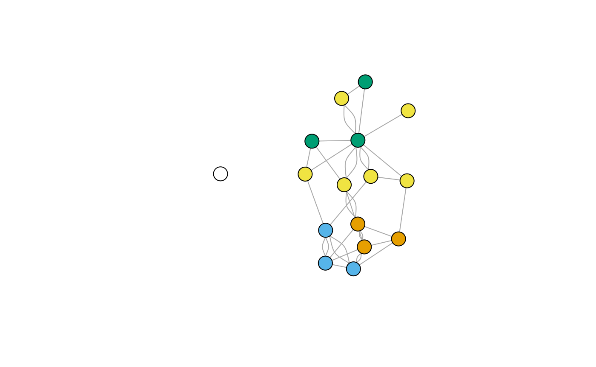
With this in mind, we encourage users to thoroughly consider how they
treat their data when using role_analysis and to use their
best judgment when interpreting its output.